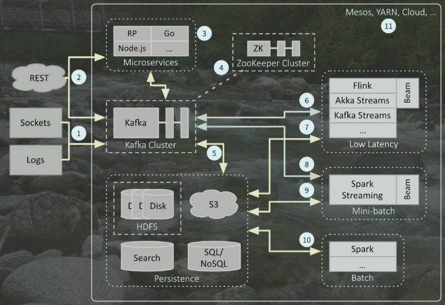

E2E ML Apache Spark
Rodrigo Hernández Mota
Agenda
ML Project Overview
Operationalizing
Spark-Based Projects
Code Example!
ML Project Cycle
Machine Learning Cycle
ML Pipelines
Machine Learning Pipeline
Traditional Approach
Impedance Mismatch
A simple solution
Predictive Markdown Model Language is:
"an XML-based language that provides a way for applications to define statistical and data-mining models as well as to share models between PMML-compliant applications."
PMML Interop
Integration with the most popular ML frameworks via JPMML:
Simple Solution using PMML
Simple Scoring
Best Practice
We can perform model scoring either with a stream-processing engine or a stream-processing library.
Suggested Architecture
Akka Cluster
Akka Cluster Implementation
The Big Picture
Data Architecture
Why Apache Spark?
According to their website,
"Apache Spark is a unified analytics engine for large-scale data processing."
Intro to Spark ML
Spark ML is a practical and scalable machine learning library based on a [Dataset].
Dataset[A].map(fn: A => B): Dataset[B]Dataset[A].flatMap(fn: A => Dataset[B]): Dataset[B]Dataset[A].filter(fn: A => Boolean): Dataset[A]
Relevant Concepts
Dataset[Row]TransformerEstimatorPipeline
Intro to JPMML
val pmmlBuilder = new PMMLBuilder (schema, pipelineModel)
pmmlBuilder.build ()See the official jpmml-sparkml github repo for a complete list of supported PipelineStages types.
Intro to Openscoring
We can use Openscoring , a java-based REST web-service, as our scoring-engine of the resulting PMML model.
Simple but powerful API
Allows for single predictions and for batch predictions.
Acceptable performance (usually sub-milliseconds respond time)